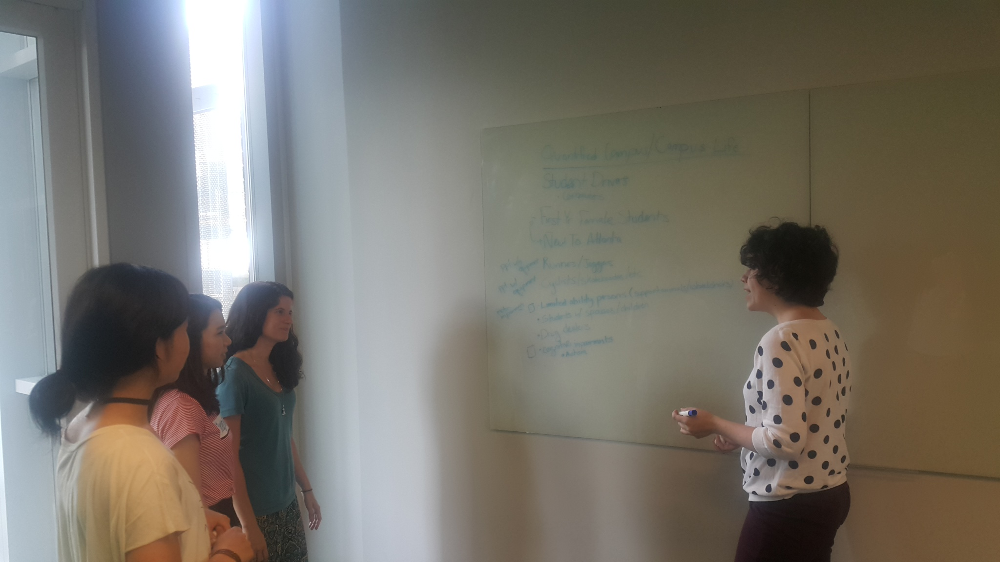

Project:U-Rack
An answer to one of the problems of campus life.

My Role:
I was the go-to person concerning research methodology for this project. I owned the creation of survey and interview questions and went out to recruit participants. Other things I collaborated on this project was the design ideation, prototyping, and user testing.
Problem
Here's the deal, Atlanta's an odd city in some ways. Live-Work-Play facilities like Ponce City Market or Atlantic Station live in juxtaposition to sprawling suburbs that essentially demand vehicle access to get to where you need to be. In the case of Georgia Tech, a lot of buildings, dorms, and places to eat on campus are simultaneously nearby and far away depending on how much time you have (which usually is less than we anticipate). It's not really a surprise that many students on campus are cyclists. They are an integral part of campus life. Our team wanted to focus on safety and security as our problem space as early as our first meeting together.
Research
The way to tackle this problem was to interact directly with our user group and hear their concerns directly from them. Through surveys, interviews, and observation we found that a lot of the safety and security issues pertinent to cyclists on campus boiled down to two things: bike storage and navigating around pedestrians and cars. We decided to analyze these topics concurrently to understand these problem areas better.
Navigation
When we originally surveyed and interviewed students about their feelings of perceived safety, our team was asking these questions with the mental context of crime and property theft. However, our users surprised us by telling us that the things that made them feel safe or unsafe on campus had to do with avoiding unobservant pedestrians and cars more than anything else. In talking to subject matter experts and facilities management, this problem seemed very salient as bikers will often end up sharing the same space as a pedestrian or car. This could mean that students are spending more time and cognitive resources trying to navigate this shared space than necessary to travel from point A to point B on campus. This was also evidenced by a contextual inquiry we performed using a GoPro strapped to a cyclists helmet to understand how they navigate through campus when students shared the same space.
Storage
We conducted a semi-structured interview with two officers from GTPD who stated that a lot of their time is spent on processing reports of bike theft. Many of the students that we talked to either knew someone who had their bike stolen or were victims of bike theft themselves! Most of the time this happened when the student's bike was locked up at a rack for a period of time (e.g. during class or at their apartment for the night). Another issue with storage is that bike racks are at a premium for space during peak times of the day. This means that students were not finding solutions for parking their bike easily and safely.
pictured above: examples of modern art.
Design and Development
Ultimately, we decided to tackle the idea of bike storage on campus.Participants cited storage and security as a more pressing issue needing to be addressed on campus than that of navigation, which can be way more nebulous and nuanced than the resources we had at our disposal. From here we started generating ideas, starting from a couple dozen and narrowing down to a few ideas. Through the use of affinity diagramming and usefulness/feasibility plotting (click here to see one of our diagrams) to help us narrow down our remaining concepts to a single idea, the U-Rack. We conducted a few benchmark tests with both low and high fidelity prototypes to see if cyclists could easily (based on performance and signs of frustration), and quickly (based on time) lock a bicycle, navigate through the app, then unlock it afterwards.
{kind=link}


Features
Part one: The Rack
The rack is a raisable bi-pronged structure mounted flush into the ground; this allows pedestrians to walk over it when not in use and lets it remain stationary. The key is that it's expandable and ephemeral, it doesn't clog up the campus visually when not in use.

Part two: The Lock

The lock takes a lot of its design inspiration from current U-Locks, however its smart functionality sets it apart. It's able to be unlocked via smartphone so you're not rummaging around for your keys when you're late to class. It can be used in normal bicycle racks so you only need to carry one lock.
Part three: The App
Once locked, the lock and the rack communicate and keep track of things like bicycle location, how long your bike's been parked, and any extreme jostling of the setup possibly indicating a theft attempt. You can monitor these things via app, which is the same way that you unlock your lock. If you suspect there's been a theft attempt, you can immediately send this information to GTPD. This eliminates a lot of the legwork in filing a police report because the U-Rack app already knows when and where the attempt took place. Additionally, the app requires you to register your bike by snapping a picture and filling out some unique information, which GTPD has access to. This also eliminates one of the problems we learned, which was that students often don't register their bikes, making it much harder to recover them in case of theft. Future iterations of the app may include social functions like being able to share your location with friends who also have the U-Rack lock, or even directions to get to U-Racks farther than the GT campus.

Special thanks to
- Kristin Hare http://kristinhare.com
- Horyun Song http://horyun.design
- Victoria Chai http://victoriachai.me